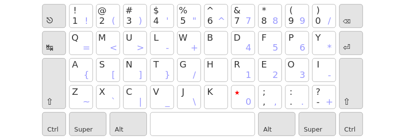
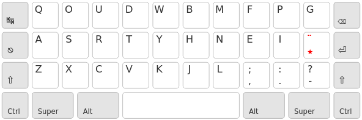
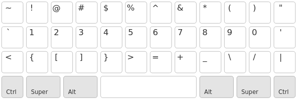

Une variante compacte et expérimentale de ErgoL
powered by x-keyboard géométrie :
Une variante compacte d’ErgoL qui limite encore plus les extensions de doigts en se fixant deux objectifs :
Voir le dépot github pour les instructions d’installation.
WTFPL – Do What the Fuck You Want to Public License.
Seules trois touches d’ErgoL sont modifiées.
Pour permettre la saisie de toutes les lettres françaises dans les 3×10 touches sous les chiffres, il suffit de regrouper les trois touches mortes sur la touche morte principale [★] :
Pour rendre la couche AltGr optionnelle, il faut renoncer à quelques facilités typographiques :
Ergol42 peut s’utiliser avec un clavier standard, mais cette disposition prend tout son sens avec des claviers compacts, dits « 50% » ou « 40% ». TL;PL:

Avec un clavier « 50% » type OLKB Preonic, l’utilisation d’ErgoL42 est très proche de celle d’ErgoL sur un clavier standard :
4×10 touches + AltGr + Espace = 42 touches, d’où le nom « ErgoL42 ». Avec cette disposition et un clavier de ce type, tous les caractères peuvent être saisis sans recourir à une couche spécifique (e.g. la couche « lower » d’OLKB).
Ces claviers sont dépourvus de la rangée des chiffres, si bien que chaque touche n’est jamais plus loin que d’une case des 8 touches de repos de la home row.

On accède aux chiffres et aux symboles via une couche spécifique du clavier (e.g. la couche « lower » d’OLKB) — par exemple en répartissant les 36 symboles restant (= 10 touches de chiffres + 8 touches excentrées) sur les 3×12 touches disponibles :

Cet arrangement de symboles n’est pas optimisé de la même façon que la couche AltGr d’ErgoL, mais il en conserve l’esprit : puisqu’il n’y pas besoin de la touche Shift ici, enchaîner les symboles reste facile.
3×12 touches + Ctrl + Super + Alt + Lower + Raise + Espace = 42 touches, i.e. le nombre nécessaire et suffisant de touches que doit comporter votre clavier pour taper en ErgoL42. Ce n’est pas un hasard. :-)